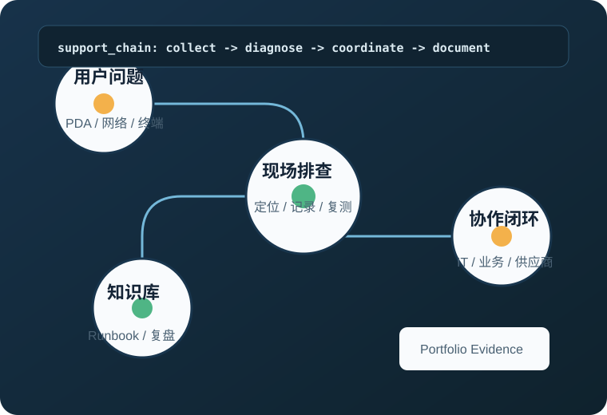

物流园区 IT 运维与现场技术支持
参与服务器、网络设备和终端设备巡检，支持 PDA、自动化设备和办公网络问题定位， 协同 IT 团队、业务部门与供应商跟进处理进度。
- 场景
- 仓储与物流现场系统、终端、网络可用性支持
- 产出
- 完成 30 余起设备及网络问题定位和处理
- 沉淀
- 巡检记录、故障处理文档、运维知识库条目
IT Support / Technical Project Support / PMO Intern
我是徐念齐，现代通信技术专业 2027 届在读，曾在物流园区现场参与 IT 运维与技术支持。 这个站点用于展示我的现场排障经验、网络基础、项目协作能力和持续学习记录。

求职方向：IT 支持实习、Helpdesk Intern、Technical Support Intern、PMO / Project Intern、 信息技术实习生。重点能力包括终端与网络排障、问题跟踪、项目资料整理、Runbook 编写和跨部门沟通。
围绕真实经历展示工作场景、职责动作和可验证产出。
参与服务器、网络设备和终端设备巡检，支持 PDA、自动化设备和办公网络问题定位， 协同 IT 团队、业务部门与供应商跟进处理进度。
完成局域网拓扑规划、VLAN 划分、交换机基础配置、连通性测试和故障场景模拟， 输出 Visio 拓扑图与测试记录。
将现场支持经验和学习内容整理为可阅读的技术说明，包括 IT 支持 Runbook、 Docker / CI/CD 学习路线和低代码 AI Flow 观察笔记。
记录可复用的方法，而不是堆叠技术名词。
区分已实践能力与持续学习方向，保持真实、清晰、可追问。